信号与系统 L01 · 课程地图、典型信号与波形运算
本讲按约79分钟原始转写与65页课件重建。开场课程要求也保留；末段课件中未详细讲解的例题与微积分图，单独标为课件自学和补充推导。有录音，但本轮未完成核听；关键识别/表述疑点可从课堂回顾定位原音。
正文依据课件与已注明的课堂材料编写；额外解释标为“补充推导”或“教材补充”。本版尚未经过逐项人工学术复核。
来源、覆盖与疑点
1. 怎样学这门课：先建立课程地图
这门课用数学模型研究信号及系统对信号的作用。前半程主要是连续时间系统，后半程主要是离散时间系统；两边都经历“时域描述→变换域分析→应用”。傅里叶变换把信号联系到频率成分，拉普拉斯变换扩大分析工具，离散部分进一步学习Z变换、DTFT、DFT与FFT。第一章提供共同语言，不宜只当成名词目录。
教师建议先预习教材、再听讲做笔记、课后先复习再做作业。课件是课堂提示，不替代书中的连续论证。参考书可以帮助看同一问题的不同组织方式，英文术语有利于后续读专业材料；AI可辅助讨论，但需要用教材、条件和计算检验答案。
本班课件推荐郑君里等第四版（2024），教师说第三版也可使用但习题有少量差异。当前归档教材确认为第三版上册。讲义中的教材定位以实际第三版为准，不把第四版推荐书目信息当成已归档版本。
课程图将傅里叶/拉普拉斯、信号空间、变换应用及滤波联系起来，教师明确本学期不覆盖教材第11、12章全部内容。学习时既要能做代数运算，也要理解波形和工程含义；Python、MATLAB可用于画图和数值验证，不能代替概念判断。
课程要求按原课堂保留：平时作业15%、课堂参与5%、期中40%、期末40%；本年度取消通常的大作业。教师提到的“挑战任务替代考试”仍在考虑中，不是已经生效的规则。作业要求手写后上传，一般次周一23:59前提交，节假日可能调整，迟交按80%计；前后半学期作业还有相应考试前的补交边界。完整日历在PPT p.8，其中11月13日标为期中；转写中个别日期不一致，日程仍须以课程通知核准。课堂强调独立思考与诚信，不接受复制答案或临近结课讨分。
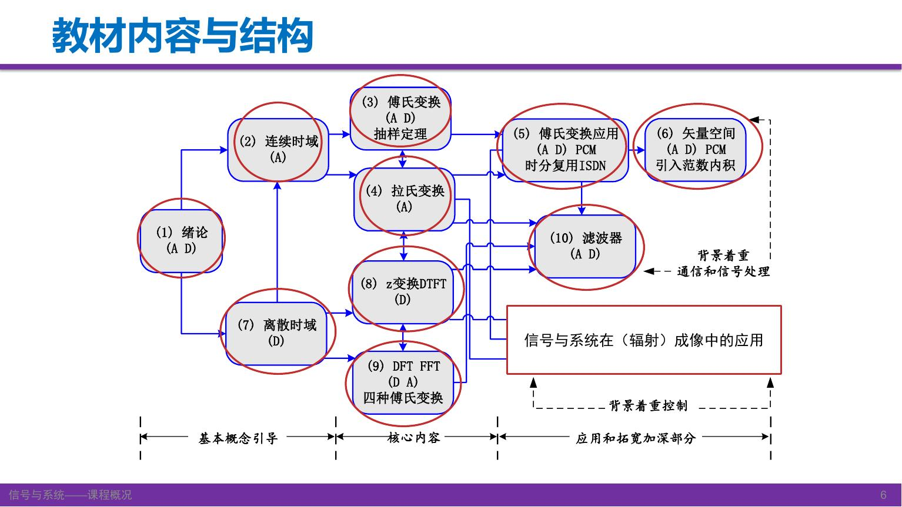
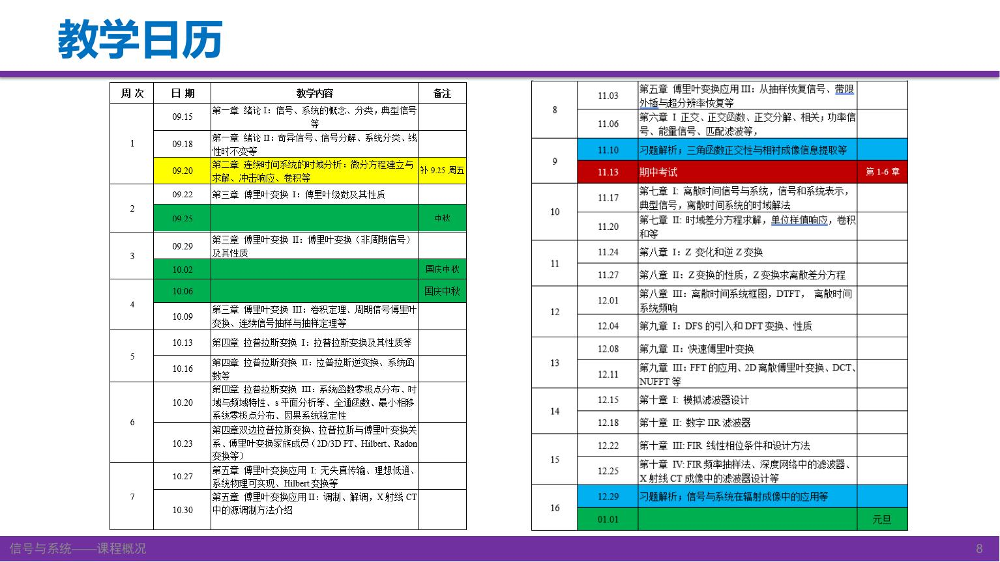
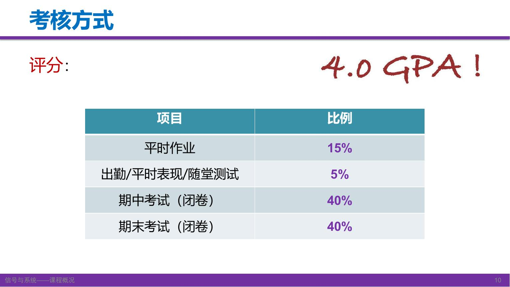
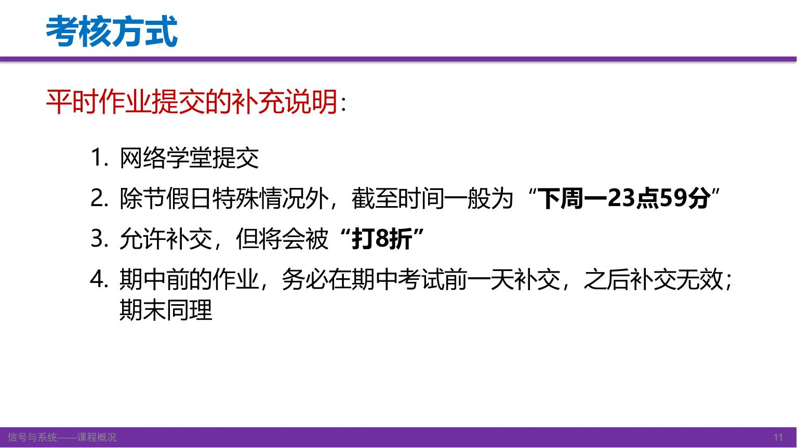
自测：本课程为什么同时强调解析式和波形？
解析式便于推导和计算，波形揭示时间、幅度和结构；两者互相核查。例如自变量乘2代表时间压缩，而不是幅度乘2。
回到教师讲解 · 来源与覆盖
2. 信号、消息、信息：载体与含义分开
信号是随时间或空间变化、用于承载消息的物理量或其数学表示。消息是传递的内容；信息可理解为接收者获得的新认识。相同的物理信号是否带来新信息，与接收者已有知识有关。教师用日常消息作直观说明，并非在这里推导严格的信息熵公式，也不能把“字数少”直接等同于“信息量大”。
语音例子把空气压力变化表示为 \(x(t)\)，横轴时间、纵轴声压或其对应电压，因此是一维信号。灰度图可写成 \(I(x,y)\)，两个空间坐标为自变量，亮度为函数值。彩色图可写成 \((R(x,y),G(x,y),B(x,y))\)：它有三个通道，但仍以两个空间坐标定位，不应把RGB三个分量误称为三个空间维度。
信号分析关注性质、分解和特征；信号处理对信号作变换以满足任务，例如去噪、滤波；传输关注信号如何从一处到另一处。课程主要研究分析方法并接触处理和传输应用。PPT p.22–26的烽火、电报、卫星、北斗和太空算力插图属于这一背景延伸，转写没有逐图详细解释，不能据此补造讲授过程。
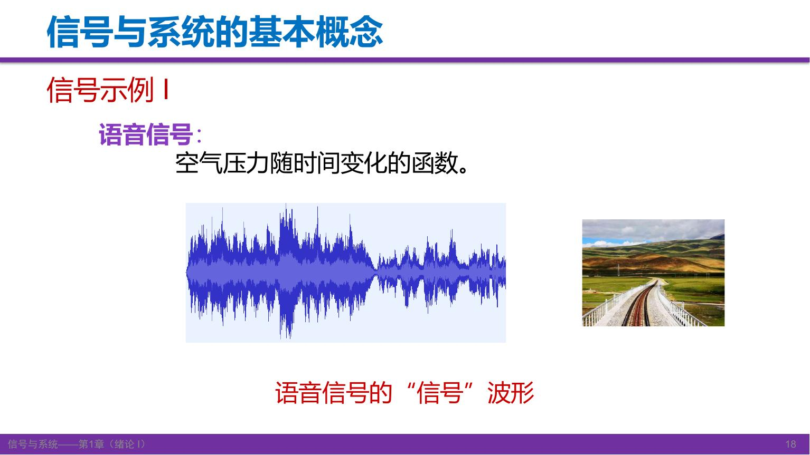
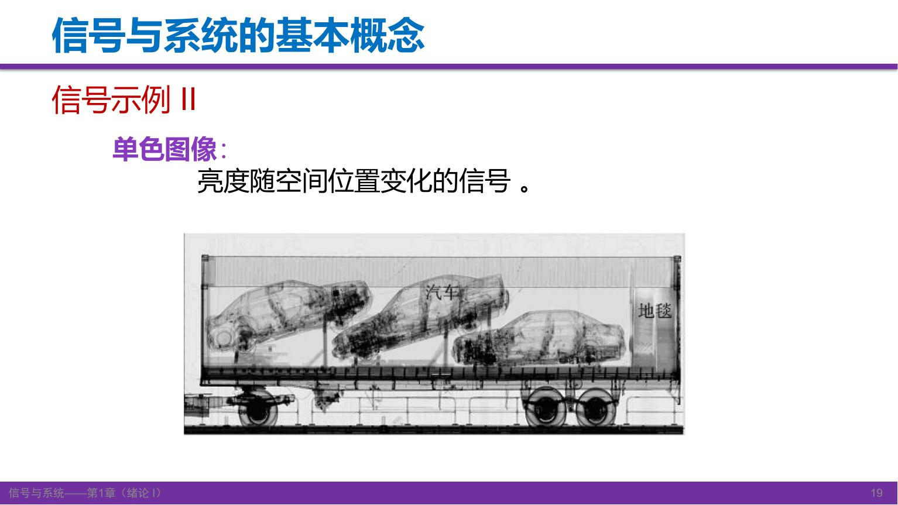
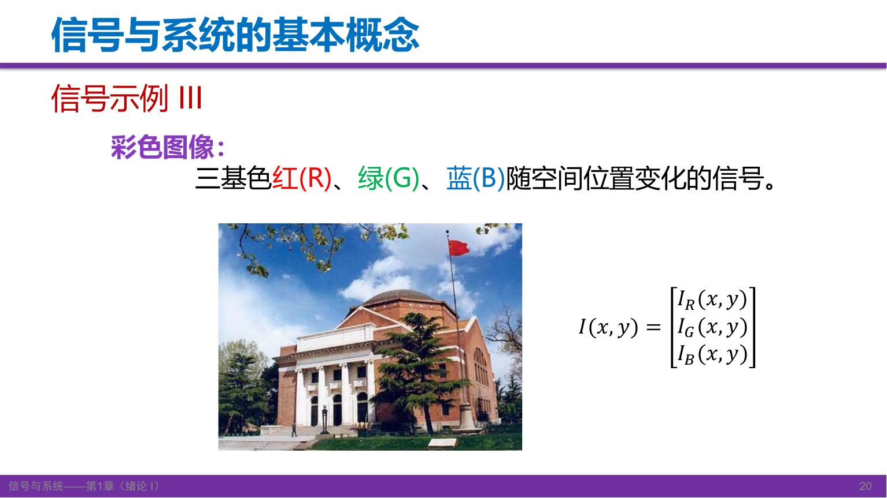
自测：彩色照片为何可称二维三通道信号？
像素位置由x、y两个自变量决定；每个位置有R、G、B三个分量。自变量维数与输出分量数不同。
回到教师讲解 · 来源与覆盖
3. 系统：从框图看输入怎样成为输出
系统由相互作用、相互依赖的组成部分构成，整体完成某种功能。研究时可以把系统分成子系统，也可以把多个环节视为一个整体，关键是明确输入、输出和边界。
广播通信框图从信息源开始：传感器把消息转为可处理信号，发送设备经信道传递，接收设备取得信号，转换器恢复供使用的消息。数字处理框图则是“防混叠滤波→A/D→数字处理→D/A→平滑滤波”。读图提示： 中间计算处理的是离散数字表示，输入输出仍可能是连续物理量；A/D前后的对象与D/A前后的对象不能不加区分。
电路侧重内部电压、电流和元件关系；网络常侧重连接结构；系统侧重整体功能及输入输出关系。这些词在实际语境中可能交叉使用，不能只凭名称认定不同物理对象。系统也不限于电系统，还可按自然/人工/混合、物理/概念等角度讨论。
分析是给定系统模型与激励，求响应并解释其意义；综合/设计是给定功能或响应要求，构造实现它的系统。教师用滤波任务说明后一类问题，并指出课程以后会接触滤波器。CT例子把信号获取、处理和图像形成联系起来，说明信号与系统研究并非只用于通信。这里不把CT示意扩写成课堂已经推导过重建算法。
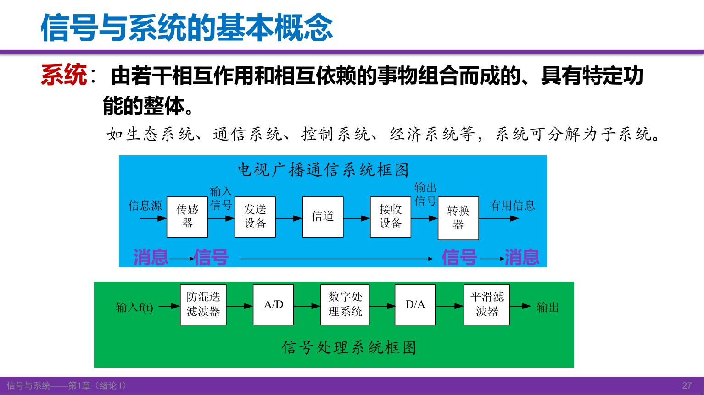
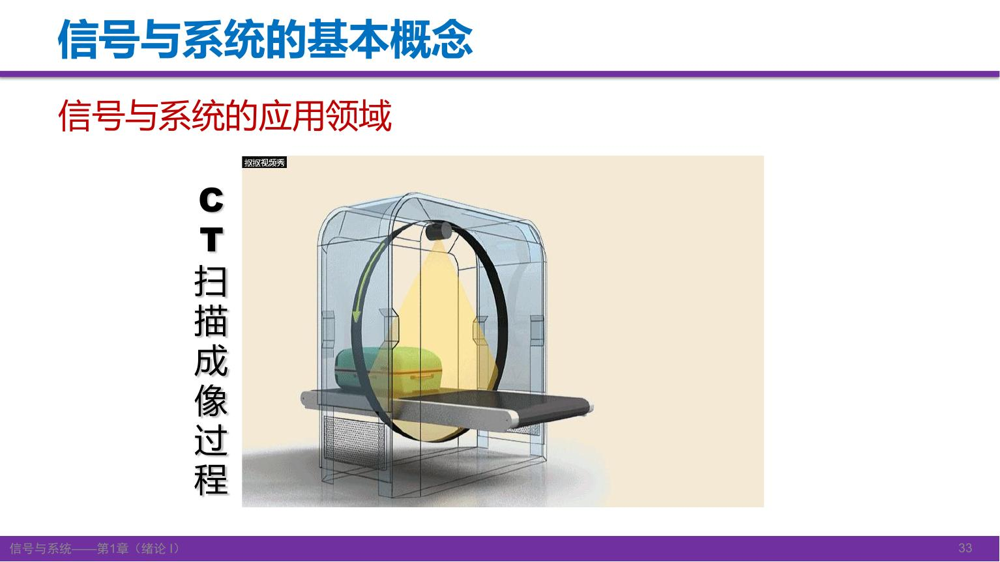
自测：已知滤波器求输出，与要求压制噪声而设计滤波器，分别是什么问题？
前者是系统分析，后者是系统综合/设计。分析还需解释计算结果的物理意义。
回到教师讲解 · 来源与覆盖
4. 分类先问：自变量连续，还是函数值连续
确定性信号的取值可由确定规则描述；随机信号用统计规律描述，不能把“看起来乱”当成唯一标准。伪随机序列可能外观随机但由确定算法生成。本课主要从确定性信号开始，概率统计为随机信号的后续分析提供语言。
连续时间与离散时间按定义域分类：连续时间信号在连续的时间范围内定义，允许函数值存在跳变；离散时间信号只在规定的离散时刻定义，其他时刻不是“值为0”，而是通常没有定义。抽样关系写成
\[
x[n]=x_c(nT_s),\qquad n\in\mathbb Z.
\]
\(T_s\)是抽样间隔，\(n\)为样本序号，包含0和负整数；横轴从实际时间换成序号不改变样本值。
| 时间 |
幅度 |
本课名称 |
| 连续 |
连续取值 |
模拟信号 |
| 离散 |
连续取值 |
抽样信号 |
| 连续 |
离散取值 |
量化信号 |
| 离散 |
离散取值 |
数字信号 |
“抽样”改变时间取值集合，“量化”改变幅值集合，两步作用不同。阶梯状波形可能在每一个时刻都有定义，所以不能看见台阶就判为离散时间信号。
课件p.43三个图的判别过程：第一图是连续时间锯齿，虽然有跳变仍属于连续时间；第二图只在离散时刻给值，幅值未限定为某几个等级，所以判离散时间；第三图同时只取1、2、3三个幅值，判数字信号。后两图只画有限片段，不能单凭当前片段保证全序列周期性。
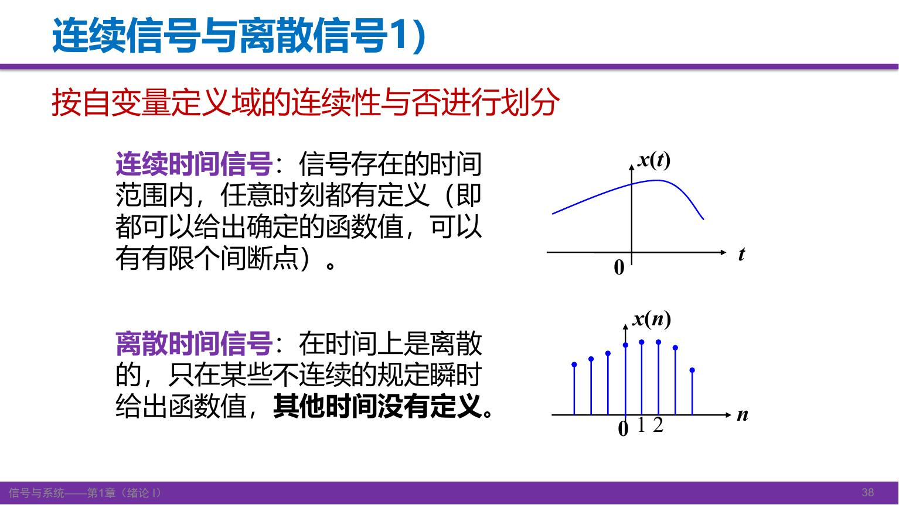
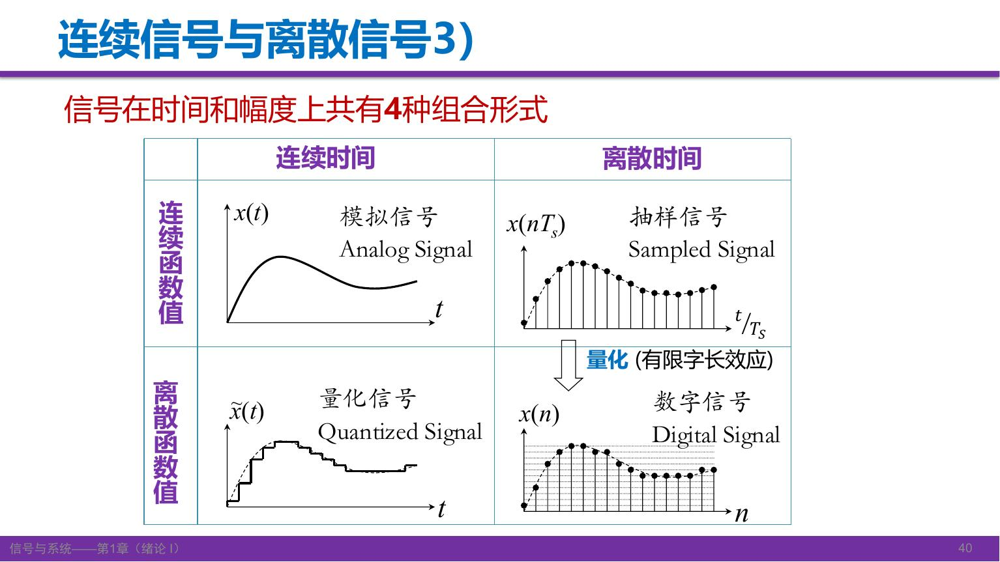
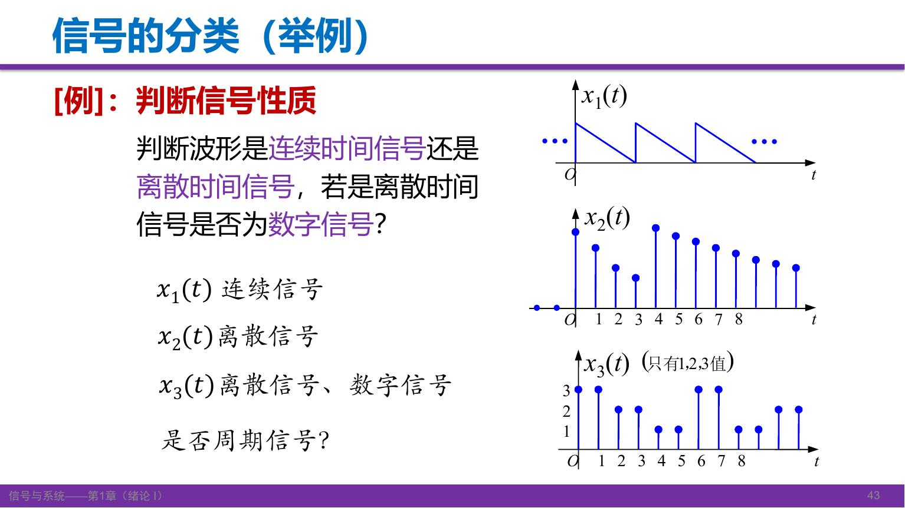
自测：一条有跳跃的阶梯曲线是否一定是离散时间信号？
不一定。先看是否对所有时间定义，再看幅值是否离散。跳跃是函数连续性问题，与时间定义域是否离散不同。
回到教师讲解 · 来源与覆盖
5. 周期性及本讲暂不展开的分类
连续时间周期信号要求存在 \(T>0\)，使所有定义域内相应时刻满足 \(x(t+T)=x(t)\)。若存在最小正周期，称为基本周期。离散时间周期信号要求存在正整数 \(N\)，使 \(x[n+N]=x[n]\) 对所有整数 \(n\) 成立。
补充推导： 对 \(x[n]=e^{j\omega_0n}\)，周期条件为 \(e^{j\omega_0N}=1\)，即 \(\omega_0N=2\pi k\)，所以须能找到整数 \(N>0,k\)。这解释了为何不能把连续正弦周期公式算出的任意实数直接当成离散序列周期。
教师用周期延拓说明周期与非周期信号之间的联系：取一段波形反复排列可构造周期波形，令重复间隔越来越大可研究孤立波形的极限。这是一种分析思想，不是“所有非周期信号实际有一个无穷大周期”的严格定义。
课件还列出能量/功率、一维/多维、因果/非因果信号。能量与功率的完整条件留待后续；本讲不伪造已经讲过的推导。因果信号在此通常指 \(t<0\) 时为0的信号，应与系统因果性区分，系统因果性将在后讲说明。
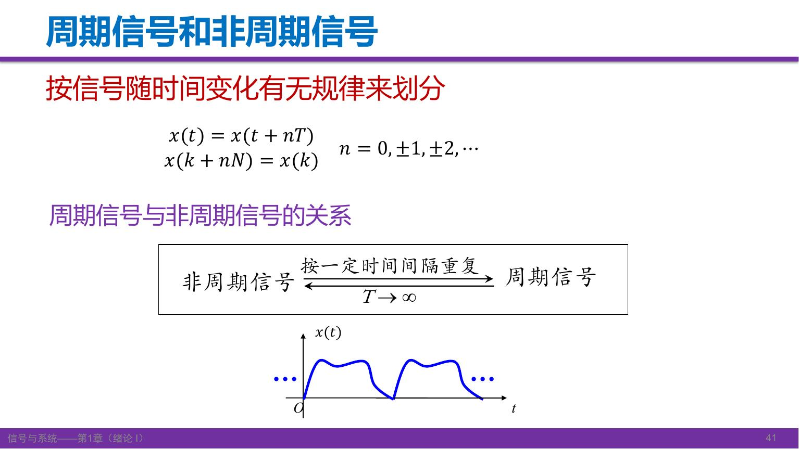
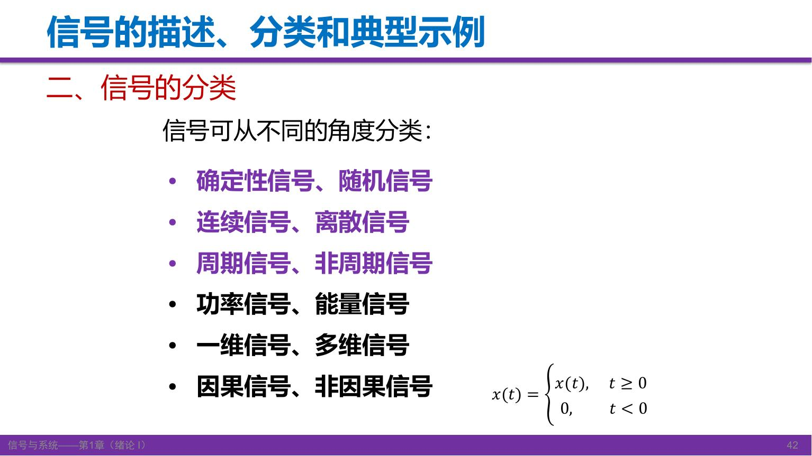
自测：周期条件为什么不能只检查几个相邻点？
周期性要求对全定义域成立；有限局部重复只是线索。离散信号还要求周期是正整数。
回到教师讲解 · 来源与覆盖
6. 常数、正弦与实指数：参数控制波形的哪里
直流信号 \(x(t)=A\) 对所有时间保持同一幅度。正弦类信号可写作 \(x(t)=K\sin(\omega t+\theta)\)，\(K\)控制幅度、\(\omega\)控制变化速度、\(\theta\)控制初始相位。\(\omega\ne0\)时基本周期 \(T=2\pi/|\omega|\)，频率 \(f=1/T\)；余弦可看作相位不同的正弦，不能漏掉角频率与频率间的 \(2\pi\)。
实指数 \(x(t)=Ke^{\alpha t}\) 中，\(\alpha>0\)随时间增长，\(\alpha<0\)衰减，\(\alpha=0\)变为常数。单边衰减信号还指定起始时刻：
\[
x(t)=\begin{cases}0,&t<0,\\e^{-t/\tau},&t\ge0,\end{cases}\qquad\tau>0.
\]
教材补充（第三版印刷p.8–9，PDF p.24–25）： 在 \(t=\tau\) 时，幅度为 \(e^{-1}\approx0.368\)，因此时间常数越大，衰减越慢。若把“衰减快慢”只记成指数前面有负号，就无法区分两条都衰减却速率不同的曲线。
“单边”意味着负时间被置零，不能只写 \(e^{-t/\tau}\) 却默认为负时间也为零。写公式时同时写参数条件和时间范围，波形才被完整确定。
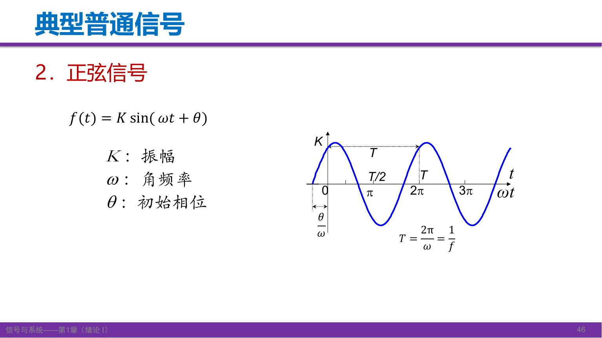
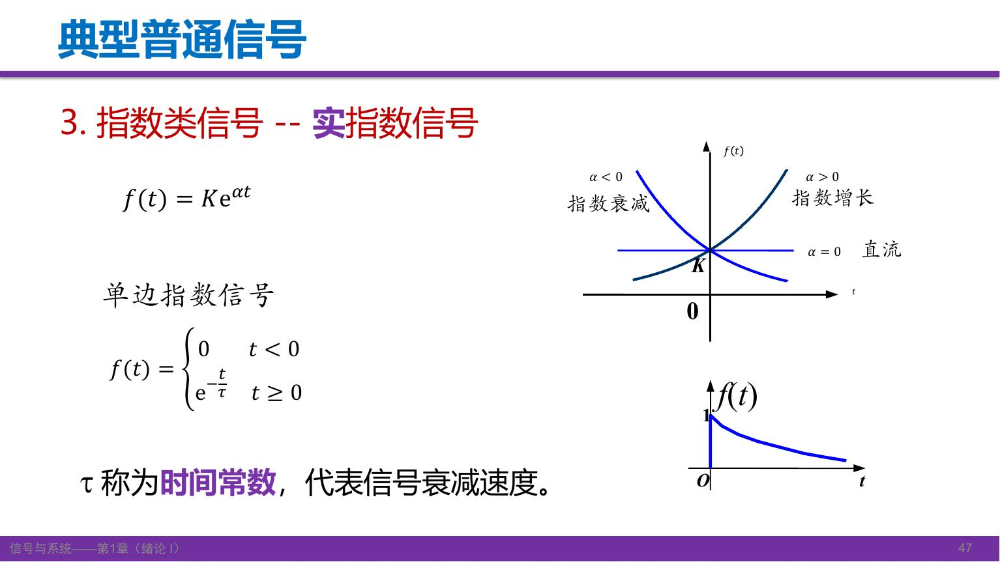
自测：时间常数增大一倍，信号衰减更快还是更慢？
更慢。到达原幅度1/e需要的时间正是τ；τ增大意味着相同衰减程度要等待更久。
回到教师讲解 · 来源与覆盖
7. 虚指数与复指数：欧拉公式要会双向使用
工程中用 \(j\) 表示虚数单位，\(j^2=-1\)。虚指数
\[
e^{j\omega_0t}=\cos(\omega_0t)+j\sin(\omega_0t)
\]
可看成复平面单位圆上的旋转向量，实部和虚部分别为余弦与正弦。模恒为1；\(\omega_0\ne0\)时周期为 \(2\pi/|\omega_0|\)。
补充推导： 把正负频率的欧拉公式相加，正弦项抵消；相减，余弦项抵消，于是
\[
\cos\omega_0t=\frac{e^{j\omega_0t}+e^{-j\omega_0t}}2,\qquad
\sin\omega_0t=\frac{e^{j\omega_0t}-e^{-j\omega_0t}}{2j}.
\]
教师强调从虚指数认出正余弦、从正余弦认出虚指数两种能力都要熟练，这会贯穿傅里叶分析。
一般复指数为 \(Ke^{st}\)，其中 \(s=\sigma+j\omega_0\)。展开得
\[
Ke^{st}=Ke^{\sigma t}\cos\omega_0t+jKe^{\sigma t}\sin\omega_0t.
\]
实部和虚部带有同一个指数包络：\(\sigma<0\)衰减，\(\sigma>0\)增长，\(\sigma=0\)退化为等幅虚指数。波形在振荡并不自动代表周期；若包络变化，通常不能经过固定时间完全重复。转写中的“负指数”在这段实际对应课件p.49“复指数”，已据公式订正。
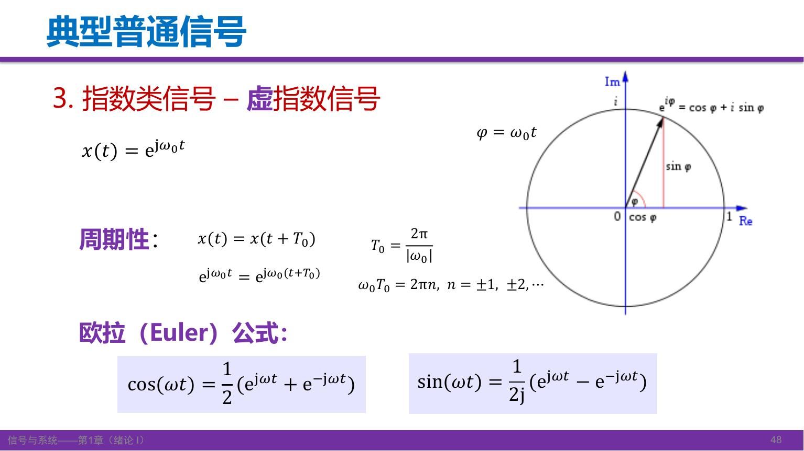
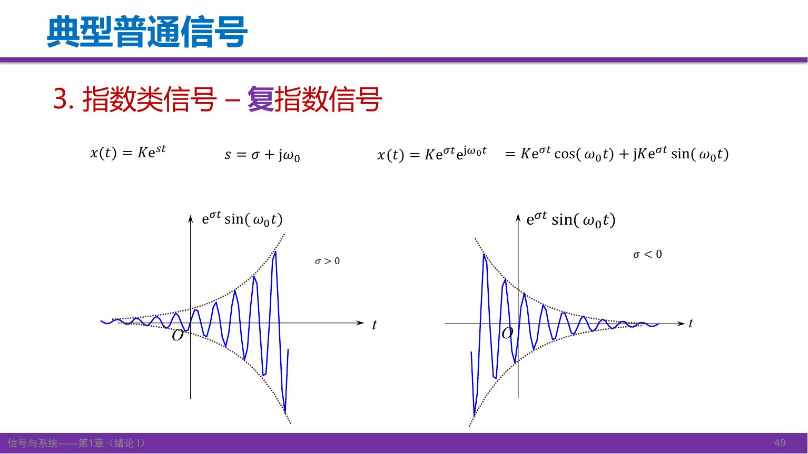
自测：σ<0的复指数虽然振荡，是否仍是周期信号？
通常不是。相隔一个正弦周期后相位重复，但指数包络改变，所以整个信号并未重复。
回到教师讲解 · 来源与覆盖
8. Sa、sinc与高斯：会读形状，也会读归一化
\[
\operatorname{Sa}(t)=\begin{cases}\sin t/t,&t\ne0,\\1,&t=0.\end{cases}
\]
零点为 \(t=k\pi\)（非零整数k），它是偶函数，中心主瓣最高为1，两侧振荡幅值逐渐减小。\(t=0\)的值来自极限，不是把0/0当作普通除法。教师口头“周期振荡”应理解为有振荡外观，Sa本身不满足周期定义。
课件采用归一化 \(\operatorname{sinc}(t)=\sin(\pi t)/(\pi t)=\operatorname{Sa}(\pi t)\)，其非零整数点为零点。不同书籍可能把sinc用于不同归一化，遇到符号先查定义。本课给出的积分性质为 \(\int_0^\infty\operatorname{Sa}(t)dt=\pi/2\)，\(\int_{-\infty}^{\infty}\operatorname{Sa}(t)dt=\pi\)。教师此处要求掌握使用，不要求课堂完成收敛性证明。
“抽样信号”这一函数名不要与“对任意连续信号抽样得到的离散序列”混淆。教师用矩形脉冲与傅里叶变换的联系作预告，具体幅度和尺度将在后续按变换约定计算。
高斯钟形脉冲写成 \(x(t)=Ee^{-(t/\tau)^2}\)，取 \(\tau>0\)。它关于原点对称，峰值E，\(t=\tau\)时为E/e，\(t=\tau/2\)时为约0.78E；参数τ控制宽度。课上只作简要介绍，本节参数解读由课件和教材PDF p.27补足。
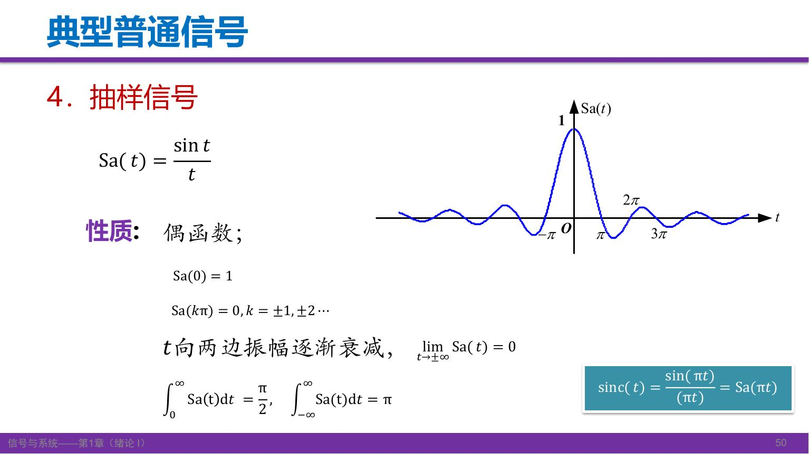
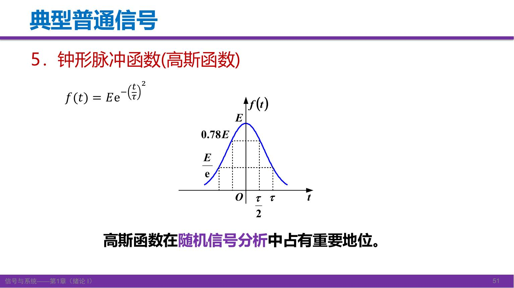
自测：Sa与本课sinc的第一个正零点各在哪里？
Sa(t)在π；sinc(t)=Sa(πt)在1。两者归一化不同，不能只记名称。
回到教师讲解 · 来源与覆盖
9. 平移、反褶与尺度：用特征点避免方向错误
信号的自变量运算改变波形在时间轴上的位置和尺度；函数值运算改变幅值或建立其他信号。先区分 \(f(2t)\) 与 \(2f(t)\)：前者时间压缩，后者纵向放大。
平移：\(y(t)=f(t-\tau)\)。原来发生在 \(u=t_0\) 的特征，现在满足 \(t-\tau=t_0\)，所以发生于 \(t=t_0+\tau\)。\(\tau>0\)右移/延迟，\(\tau<0\)左移/超前。口头“往前往后”容易混，使用方程比依赖方向词可靠。
反褶：\(y(t)=f(-t)\)，特征点 \(t_0\to-t_0\)，左右镜像、幅值不变。课堂说物理器件不能实现，需理解为任意未知、全时间信号的实时反演需要未来信息；已经存储的有限序列可以倒序读取，并不矛盾。
尺度：\(y(t)=f(at)\)，\(a\ne0\)，特征点 \(t_0\to t_0/a\)。\(|a|>1\)压缩，\(0<|a|<1\)扩展，宽度变为原来的 \(1/|a|\)；\(a<0\)还反褶。课件p.56的三条斜坡在1、1/2、2处达到同样高度，说明变的是时间，不是峰值。
补充推导：通用特征点法。 对 \(y(t)=f(at+b)\)，令旧自变量为u，则每个原特征点映射到
\[
t=\frac{u-b}{a}.
\]
先列端点、拐点、跳变点，再变换横坐标，最后按新时间从小到大连接，幅度保持。这个方法能同时检查支撑区间和方向。
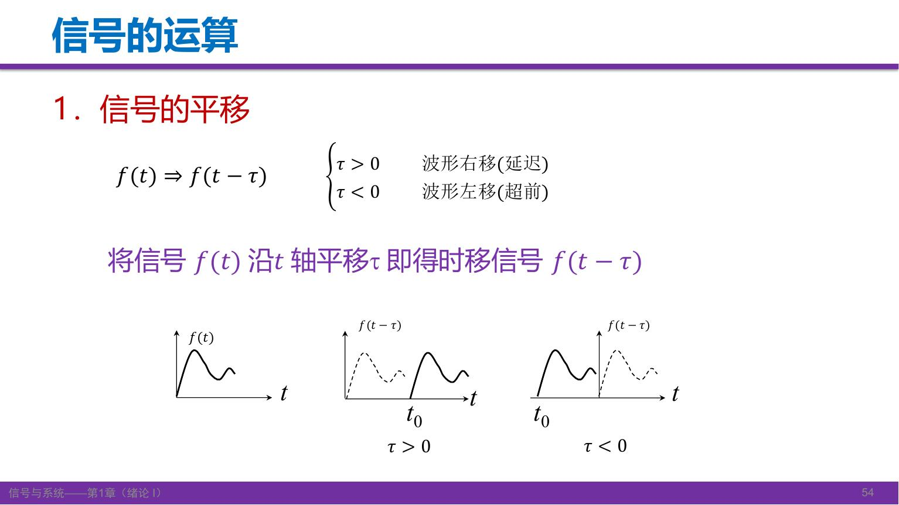
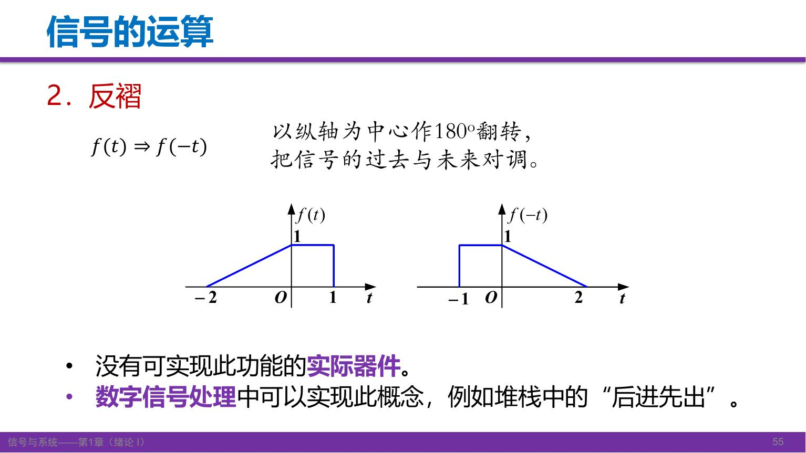
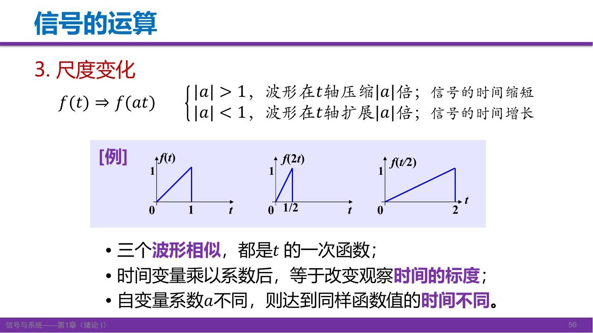
自测：f(2t)的峰值是否变成原来两倍？
不会。原峰值对应的时刻除以2，峰值仍相同；2f(t)才是幅值乘2。
回到教师讲解 · 来源与覆盖
10. 组合变换例题：把中间每一步写出来
课堂主要例题（PPT p.58）： 原三角波支撑在[-1,2]，峰值在u=1处为2，求 \(f(-t-1)\)。用 \(u=-t-1\)，得 \(t=-u-1\)：
| 原特征u |
−1 |
1 |
2 |
| 新时刻t |
0 |
−2 |
−3 |
| 原幅值/新幅值 |
0 |
2 |
0 |
按新时间排序，波形从(-3,0)升到(-2,2)，再降到(0,0)，其余为0。两种操作路线均可达到它：先把f(t)延迟1成f(t−1)，再将整个函数的t换成−t；或者先反褶得到g(t)=f(−t)，再将g超前1，得到g(t+1)=f(−t−1)。
重要条件： “可以换次序”是指调整每一步参数后可到达同一目标，不表示保持相同平移量任意交换仍相等。原转写末尾有f(−t+1)的混乱表达，整理稿保留编者注，正确路线由原课件图与逐步代入确定。
课件自学＋补充推导（p.59）： 原图为 \(f(u)=u\)（0≤u≤2），区间外0，求 \(f(4-2t)\)。先解 \(0\le4-2t\le2\)，得 \(1\le t\le2\)；在此区间输出为4−2t，从(1,2)下降到(2,0)。也可先反褶、再压缩2倍、最后右移2：\(f(t)\to f(-t)\to f(-2t)\to f[-2(t-2)]\)。
课件自学＋补充推导（p.60）： 已知g(t)=f(2−2t)，反求f。令u=2−2t，解t=1−u/2，所以 \(f(u)=g(1-u/2)\)。原g图的t=0,1,2分别映到u=2,0,−2，时间方向反转并拉宽2倍。原图在t=1有跳变，恢复后的u=0仍有跳变，只是左右侧互换；不要把跳变连成一条连续斜线。
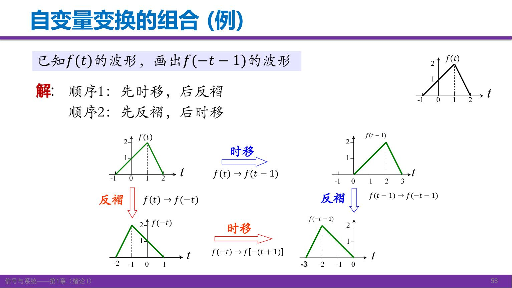
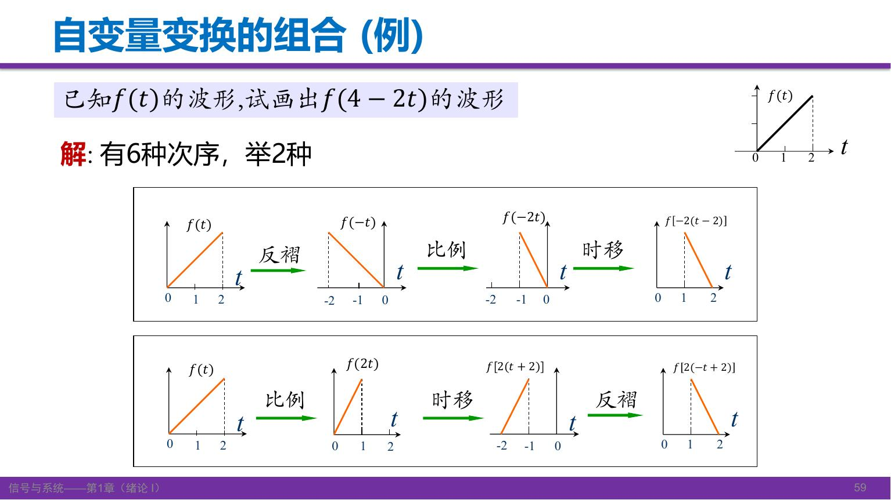
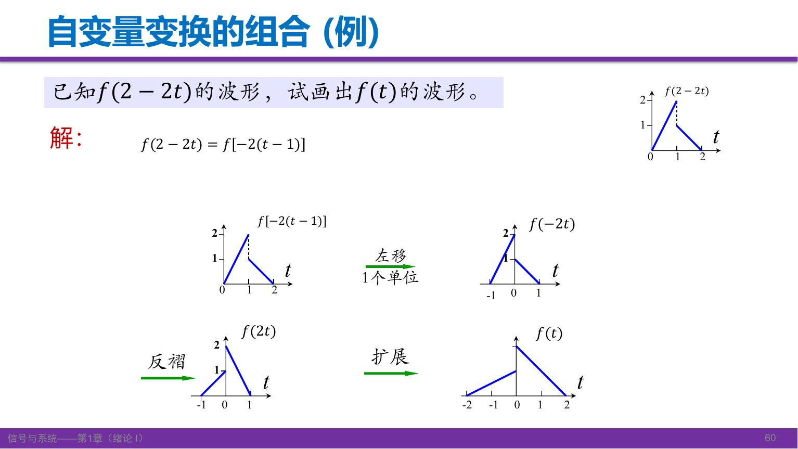
自测：从g(t)=f(−t)到f(−t−1)，应该把g左移还是右移1？
左移1：g(t+1)=f(−t−1)。若右移1则g(t−1)=f(−t+1)，不是题目目标。
回到教师讲解 · 来源与覆盖
11. 微分、积分、相加与相乘：课件自学部分
转写末尾教师将其余图形内容留作自学，下面保留原图并补足步骤，不写进教师整理稿冒充课堂推导。
微分 \(y(t)=df/dt\) 读的是局部变化率；积分 \(z(t)=\int_{-\infty}^{t}f(\lambda)d\lambda\) 读的是累积面积，积分变量应与上限t区分。p.61原图在−τ到0线性升到1，0到τ恒为1，τ以后降为0。前一段斜率为1/τ，平台斜率0；τ处的向下跳变在广义导数中还对应负冲激，原简图没有完整表示它，不能将图中普通函数部分当成全部导数。
补充推导： 对这条原波形，累积积分为
\[
z(t)=\begin{cases}0,&t<-\tau,\\(t+\tau)^2/(2\tau),&-\tau\le t<0,\\t+\tau/2,&0\le t<\tau,\\3\tau/2,&t\ge\tau.\end{cases}
\]
第一段由三角形面积得二次函数，平台段积分线性增加，信号结束后总面积保持1.5τ。图上0处0.5τ与最终1.5τ可以用面积直接验算。
两信号相加、相乘都是同一时刻的对应值运算。p.62相加的例子表现叠加干扰；相乘的例子表现调制。不要把逐点相乘等同于卷积：卷积是后续涉及位移、乘积与积分的另一种运算，这里仅作预告。
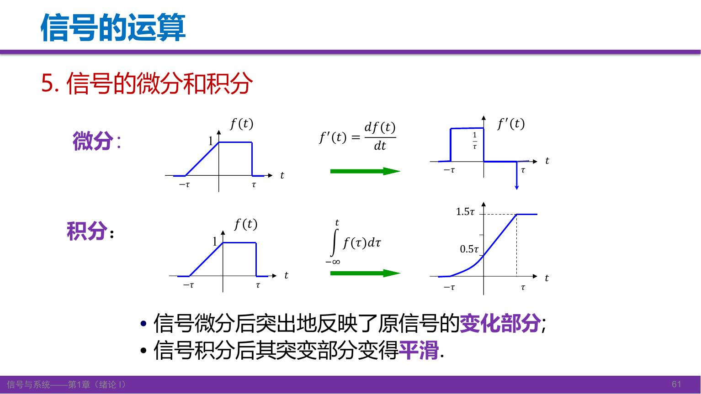
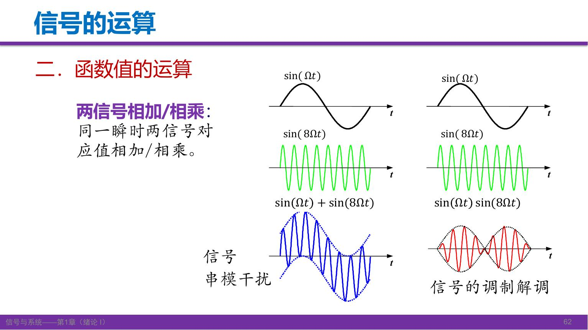
自测：原信号在某段为零，累积积分是否也必须为零？
不一定。积分保存此前累积的面积；信号结束后可保持非零常数。
来源与覆盖
12. 作业、教材对应和复习出口
课件p.64作业为 1-3、1-4、1-5，1-10(a)(b)(c)，1-12单号小题；预习§1.4–§1.8。课堂最后确认有画图相关作业，但未逐题口述，题号以课件所列为证据。
当前第三版上册已核页：印刷p.40/PDF p.56有1-3及1-4开头，p.41/PDF p.57接续1-4并列1-5，p.42/PDF p.58有1-10与1-12。其中1-4是变换次序练习，1-10含三角波、阶梯波和半周期正弦图；这些定位直接来自当前版本原页，不由题号猜测。第四版尚未归档，不能宣称跨版题面逐字相同。
教材主题定位：信号与系统PDF p.17–20；分类p.20–24；典型波形p.24–27；运算p.27–31。课堂只简略解释的步骤，可用本讲补充推导后再回页核验。
读完后应能自己做三件事：给一条波形按正确的轴分类；从参数解释正弦、指数和Sa的形状；把任意 \(f(at+b)\) 的端点和拐点映射出来。下讲从阶跃、冲激等信号继续，尚不熟悉冲激时可先理解普通分段波形，并将第11节跳变导数说明作为连接点。
教材目录入口 · 实际第三版作业页
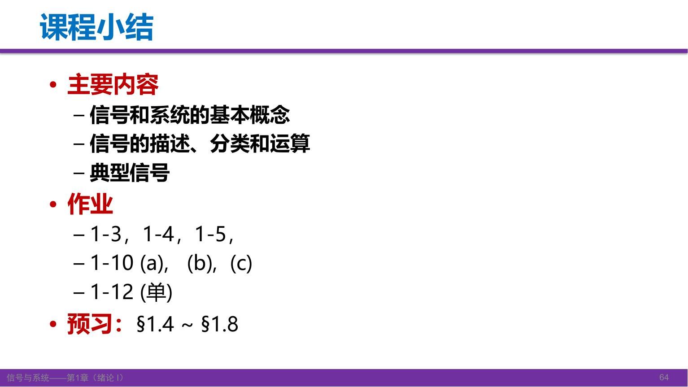
自测：本讲讲义里的自测和PPT指定作业有什么关系？
自测检验本节理解，由编者编写；指定作业来自PPT p.64，两者分开，完成自测不代表已交作业。
回到教师讲解 · 来源与覆盖
课堂回顾 · 忠实整理与订正稿
按原始转写顺序整理。时间为转写段落定位，不是核听后的精确切点；同一片段可对应多页。删除口头赘词、无意义重复和点名姓名，保留解释、例子、要求和有效问答。编者注不属于教师原话。音频尚未核听，关键疑点在原处保留。
T01 · 教材版本与预习
原转写：00:00–03:09；课件：PDF p.5。
展开对应课件页
PDF 第 5 页课程使用郑君里等编写的《信号与系统》。现在推荐的是2024年的第四版，2011年的第三版也能用，主要内容没有那么大的差别，但少数习题有变化。大家使用不同版本时，做题要注意对应，不能只看题号。
希望大家课前预习。预习时应当先看书，而不是只看PPT。课件是上课讲解的线索，并没有把教材的内容全部放进去。上课要做笔记，课后也不要马上拿作业一题题做，先把本堂课的内容过一遍，再用作业检查自己哪里没有理解。学这门课要有连续的过程。
编者注： 原转写中的作者姓名识别依据PPT p.5订为“郑君里”；当前档案实际保存第三版上册，并没有第四版正文。
回到讲义
T02 · 参考书、专业英语与AI
原转写：03:09–08:37；课件：PDF p.5, 7。
展开对应课件页
PDF 第 5 页PDF 第 7 页除了主教材，还有奥本海姆的《信号与系统》，中英文版都可以参考。不同作者会以不同的顺序组织同一套内容，看另一种讲法有助于理解。鼓励大家接触英文材料，这门课里的专业词汇以后还会反复见到，早一点熟悉并不吃亏。
后续数字信号处理、数字图像处理等课程会在此基础上继续展开，不能因为参考书提到这些内容，就认为这门课都会讲完。Bracewell的《The Fourier Transform and Its Applications》对理解傅里叶变换及应用也有帮助，有兴趣可以进一步读。
现在大家能够使用AI问问题，但AI说得很顺不等于一定正确。学习时仍然要看书、理解公式和条件，自己判断答案。工具可以帮助解释，不能替代对基本内容的掌握。
回到讲义
T03 · 课程结构：连续走向离散
原转写：08:37–11:57；课件：PDF p.6。
展开对应课件页
PDF 第 6 页我们会从连续时间信号与系统走向离散时间信号与系统。第一章是绪论，安排两次课，先把基本概念、分类、常用信号和系统认识起来。第二章在时域研究连续系统，接着学习傅里叶变换、拉普拉斯变换，再看变换的应用。
傅里叶分析在这门课里非常重要，后面的很多内容都与它相连。信号空间、相关等内容也会涉及。期中以后转向离散部分：离散时域、Z变换、DTFT，以及DFT、FFT，最后有滤波器相关内容。这些不是互不相干的章节，要沿着它们之间的关系理解。
教材还有更多章节，本学期不会全部展开，特别是第11、12章不在这一轮主要教学内容之内。参考书的目录很长，并不表示一学期必须把每一章都讲完。
回到讲义
T04 · 学习投入与教学日历
原转写：11:57–15:31；课件：PDF p.8。
展开对应课件页
PDF 第 8 页大学学习有很多可利用的资源，大家可以去图书馆找书、阅读，而不只围绕眼前作业。愿意花时间深入学习，会逐渐看到这些知识之间的联系。
下面看教学日历。课程会受到假期和调课的影响，有些日期不上课，有些安排需要调整；中间安排期中考试，后面继续离散部分。请留意实际课程安排，不要只按平时每周的习惯判断。
编者注： 这一段转写出现日期不一致，包括“11月6日不上”等表达。PPT p.8可读到11月13日期中，11月6日为第六章安排；未核听前不替教师确认是哪一天口误，也不据此创建新的日程。此段保留日历用途，具体日期看原图并以课程通知核准。
回到讲义
T05 · 数学、物理图像和工程意义
原转写：15:31–18:20；课件：PDF p.9。
展开对应课件页
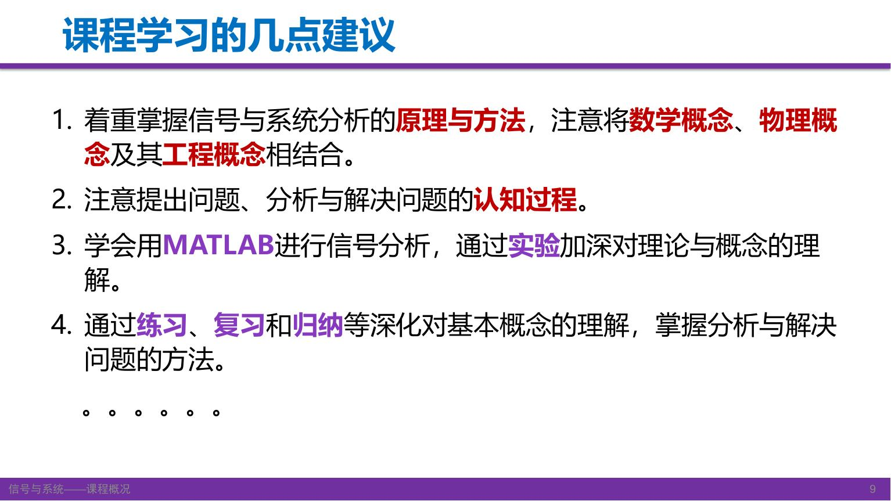
PDF 第 9 页这门课有数学，但不只是数学计算。要把基本概念、数学描述和物理意义联系起来，知道一个公式为什么要这样写、它描述什么现象。只背公式，题目换一种表达就容易出问题。
画图和看波形很重要。同一个信号可以用解析式表示，也可以用波形表示，两种方式要能对应。大家可以用Python、MATLAB等工具计算和画图，但不能因为软件画出了一条线，就认为自己已经理解它。先判断结果应该是什么样，再用工具检验。
回到讲义
T06 · 成绩构成与学习责任
原转写：18:20–22:49；课件：PDF p.10。
展开对应课件页
PDF 第 10 页本课程作业占15%，课堂参与占5%，期中与期末各占40%。今年不再按以前的方式安排通常的大作业。大家应当在平时完成相应学习，不要到最后才来问能不能多给几分。
关于特别的挑战性任务、是否能够以某种方式替代考试，还在考虑，没有在这里定下来。不能听到提了一种可能，就当成正式规则。
这门课需要投入时间。若同时选择了过多课程，确实难以兼顾，应当认真评估自己的安排。教师希望大家学到东西，而不是临近期末才围绕成绩想办法；评分按课程要求执行。
回到讲义
T07 · 作业提交、诚信与绪论范围
原转写：22:49–29:53；课件：PDF p.11, 12, 13, 14, 15。
展开对应课件页
PDF 第 11 页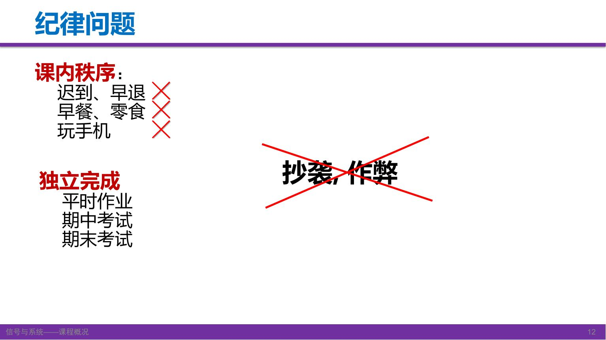
PDF 第 12 页PDF 第 13 页PDF 第 14 页PDF 第 15 页作业要求自己手写，再上传到网络学堂。一般安排在下一周一晚上23:59之前提交，碰到假期可能调整。迟交的作业会按80%计算，前半学期的作业要在期中相关截止要求前补齐，后半学期也有期末前的截止边界，不能无限期拖下去。
可以讨论作业，也可以利用AI等工具帮助理解，但最后的推理要自己明白、自己完成。直接复制别人的答案不等于学习。考试必须遵守纪律，作弊的后果很严重，不要抱侥幸心理。
接下来进入第一章。绪论分两堂课，本堂从信号与系统的基本概念开始，介绍信号怎样描述和分类、一些典型信号以及基本运算。后面还会讲阶跃、冲激等内容，不在今天一次展开。
编者注： 删除了纪律警告中的重复修辞；保留课程诚信要求，不将未经核查的处分细节转写成制度依据。
回到讲义
T08 · 信号、消息与信息
原转写：29:53–34:26；课件：PDF p.16, 17。
展开对应课件页
PDF 第 16 页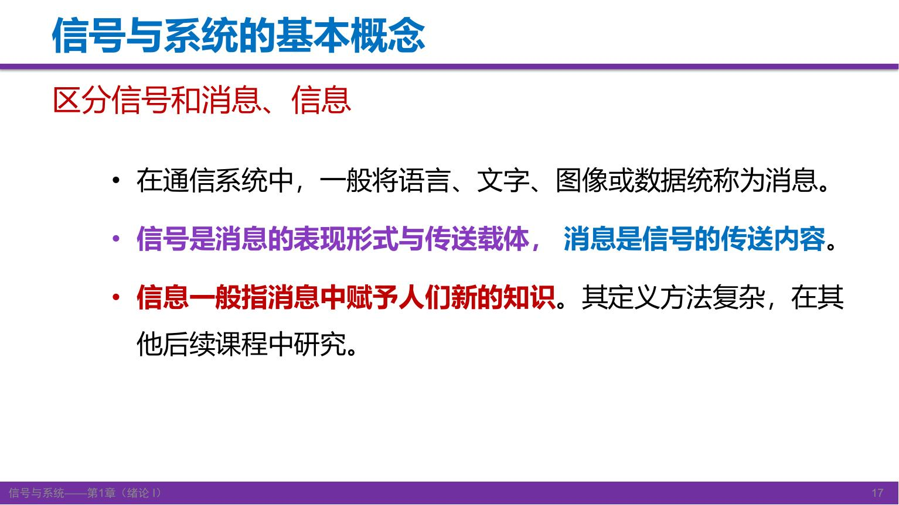
PDF 第 17 页什么是信号？可以把它看成随时间或空间变化、承载消息的量。消息是要传达的具体内容，信号是这种内容的表现和传递方式。信息又与接收者通过消息得到什么新的认识有关，这几个词有联系，但不是完全同一个层次。
日常交流中，一句话的文字很多，不一定让你得到很多新东西；有时很短的一句话，反而让接收者知道了很重要的事情。这里用生活例子帮助大家区别载体和含义，不是按字数来判断信息多少。
我们后面主要研究的是信号怎样表示、怎样分析和处理。真实消息可以通过不同的物理形式来承载，建立数学描述后，才能使用共同的方法讨论。
回到讲义
T09 · 一维语音与二维图像
原转写：34:26–37:09；课件：PDF p.18, 19, 20。
展开对应课件页
PDF 第 18 页PDF 第 19 页PDF 第 20 页比如声音，空气压力随时间变化，就形成了一个信号。把这个变化记录下来，可以画成波形，横轴是时间，纵轴是信号值。这样的信号只有一个自变量，是一维的。
图像也可以看成信号。一幅灰度图，每个位置有不同的亮度；要确定一个位置，需要横、纵两个坐标，所以是二维信号。彩色图可以用红、绿、蓝几个通道表示，每个通道仍然对应图像上的空间位置。
不要把信号只理解成电压、电流。其他物理量可以先由传感器转换成电信号，再进行处理，或者直接在数学上表示为随时间、空间变化的函数。
编者注： RGB是输出的三个分量，不是三个空间自变量。
回到讲义
T10 · 分析、处理和传输
原转写：37:09–40:14；课件：PDF p.21。
展开对应课件页
PDF 第 21 页信号理论涉及分析、处理、传输等不同方面。分析是认识信号具有什么性质、可以分解成什么成分；处理是对它作适当改变，以达到需要的目的；传输则是把信号从一处送到另一处。
我们这门课主要讲分析，也会涉及一些处理和传输中的基本问题。比如以后出现调制的概念，就和传输相关，但不会把通信系统全部内容都在这里讲完。建立基本分析工具，是为了以后在不同应用里使用。
编者注： 相邻PPT p.22–26有通信发展与应用插图，原转写没有逐页展开，讲义把它们作为课件背景处理，不新增教师逐图讲解。
回到讲义
T11 · 系统与两个框图
原转写：40:14–44:47；课件：PDF p.27。
展开对应课件页
PDF 第 27 页系统是若干相互作用、相互依赖的事物组成、具有特定功能的整体。系统可以很大，也可以分成若干子系统。你研究什么问题，就要明确自己把哪一部分当作整体。
广播通信系统里，信息先经过传感器变成信号，再通过发送设备、信道和接收设备，最后恢复为可以使用的消息。各个环节不是孤立工作的，前后输入输出联系起来，才完成整个功能。
数字信号处理系统也有类似的链条。外部来的连续信号，先经过适当处理和模数转换，计算机在数字形式下处理，再通过数模转换回到需要的输出形式。看框图时要知道每个方框做什么，也要知道整条链路最终解决什么问题。
回到讲义
T12 · 电路、网络、系统与分类
原转写：44:47–47:04；课件：PDF p.28, 29。
展开对应课件页
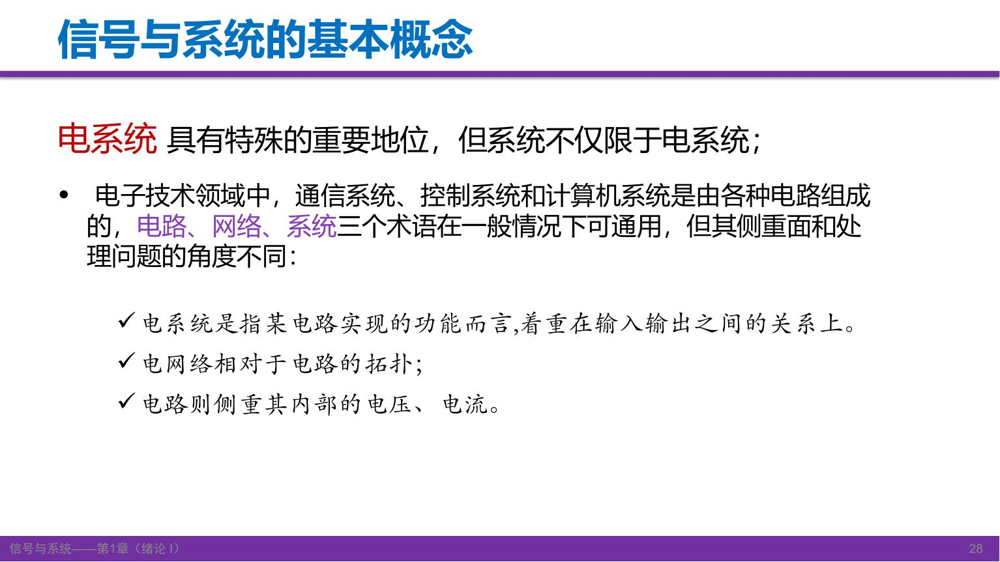
PDF 第 28 页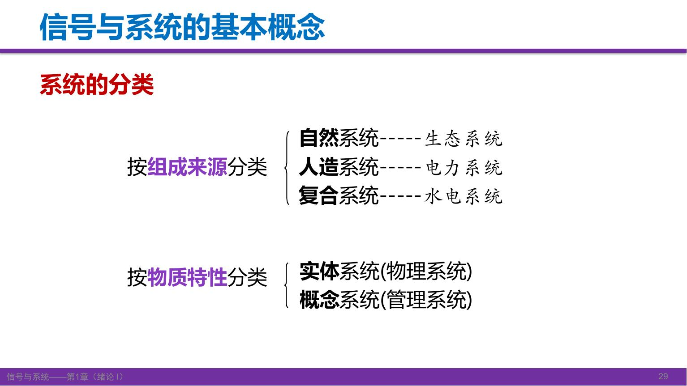
PDF 第 29 页电系统很重要，但系统不限于电系统。电路、网络和系统这几个词在一些情况下会混用，侧重点不同：电路更多看内部电压、电流，网络看连接关系，系统更多看实现的功能和输入输出关系。
系统也可以从不同角度分类，例如自然的、人工的、两者结合的，或者物理系统与概念系统。分类并不是为了记一串名称，而是为了说明我们关心什么对象、采用什么描述方式。
回到讲义
T13 · 系统分析与系统综合
原转写：47:04–50:54；课件：PDF p.30。
展开对应课件页
PDF 第 30 页分析和综合是两类问题。给定系统，知道输入是什么，要求它会产生什么输出，这是分析。算出答案以后，还要能说明它意味着什么，不能只停留在一个式子。
另一类问题是先提出要求：我希望得到某种输出或某种功能，应该设计什么样的系统，这就是综合或设计。比如想设计一个滤波器，让某些成分通过、某些成分受到抑制，就是从需求出发找实现。
本课程大量内容是分析方法，后面讲滤波器时也会涉及设计思想。分析与设计有关联，但提问方向不同。
回到讲义
T14 · 信号与系统的联系及应用
原转写：50:54–54:56；课件：PDF p.31, 32, 33, 34。
展开对应课件页
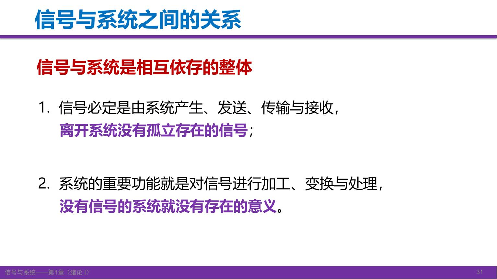
PDF 第 31 页PDF 第 32 页PDF 第 33 页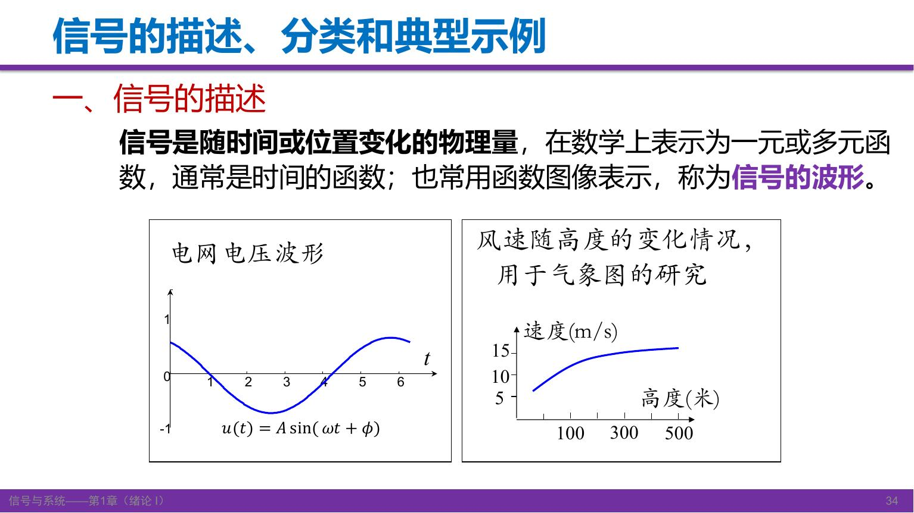
PDF 第 34 页信号与系统不能完全分开看。信号需要系统来传输、处理，研究系统也总要涉及输入信号、输出响应。不同系统对同一信号可能产生不同作用，同一系统面对不同信号也会表现出不同输出。
这些思想不仅用于通信，也用于控制、测量、成像等。比如CT，有信号的获取，有探测数据的处理，也有最终图像的形成。可以把这些当作彼此联系的系统或子系统；课程建立的分析语言能够用于理解这类问题。
接下来从复杂的实际波形转到分类和典型形式。直接面对所有波形很难学习，因此先找到共同类型，再掌握基本工具。
回到讲义
T15 · 确定性、随机与其他分类
原转写：54:56–58:30；课件：PDF p.35, 36, 37。
展开对应课件页
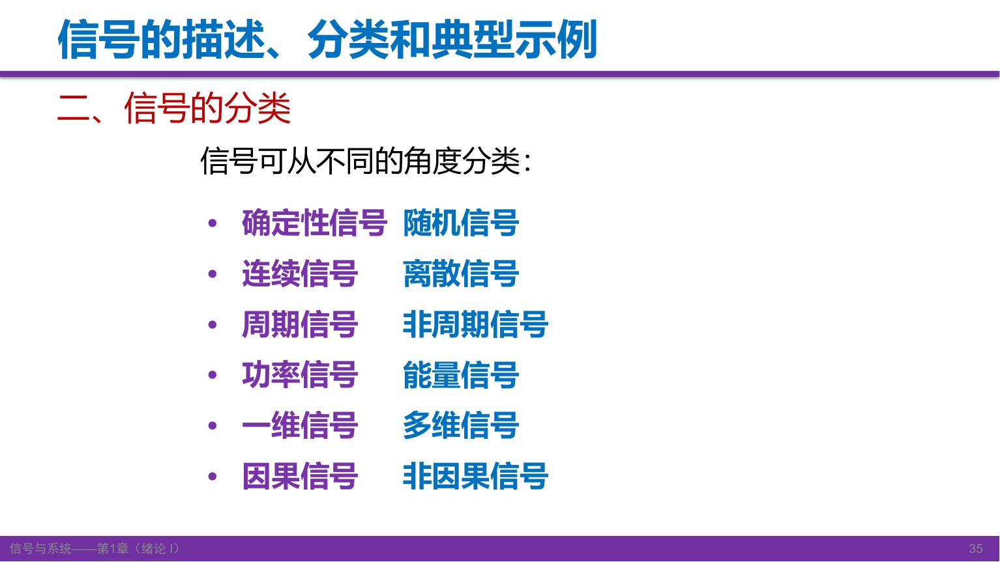
PDF 第 35 页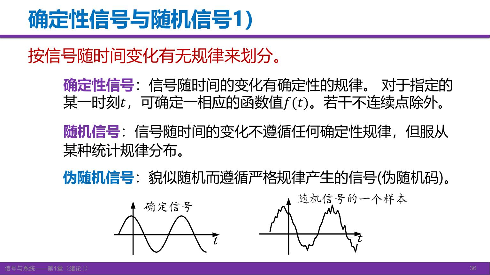
PDF 第 36 页PDF 第 37 页信号有很多分类角度，可以分确定性和随机、连续和离散、周期和非周期，也有能量与功率、一维与多维、因果与非因果等分类。课程都会逐步接触，多维信号在后面的数字图像处理里更常见。
确定性信号是知道时刻以后，能够按确定规律给出函数值。随机信号不能这样逐点确定，但它遵从统计规律。随机不等于完全杂乱无章；学过或正在学的概率统计，正是描述这种规律的工具。
还有伪随机信号，看起来随机，实际上遵循确定的生成规则。计算机模拟里会遇到这种情况，这里知道有这一类即可。我们希望通过测量信号去了解背后的规律，下面先讲本课程常用的连续和离散划分。
回到讲义
T16 · 连续时间、抽样与数字化
原转写：58:30–01:01:50；课件：PDF p.38, 39, 40。
展开对应课件页
PDF 第 38 页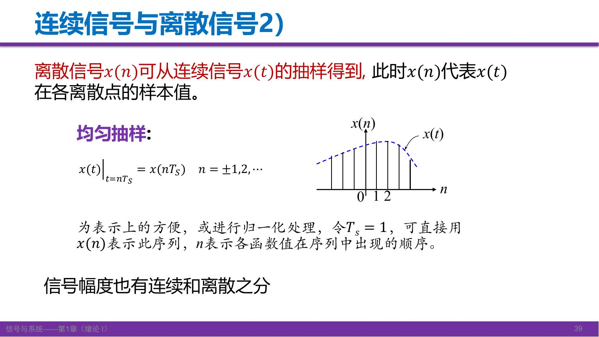
PDF 第 39 页PDF 第 40 页按自变量划分，连续时间信号在相应时间范围内任意时刻都有定义，曲线上允许出现间断。离散时间信号只在一些规定的时刻给出值，其他时间没有定义。自然界中很多信号按连续方式描述，但也有按天、按年等离散记录的数据。
连续信号和离散信号有联系。对连续信号取某些特定时刻的值，就得到离散样本；如果按相等时间间隔取值，就是均匀抽样。横轴也可以用样本序号来表示。
信号幅值本身也有连续和离散之分，所以结合时间和幅值，可以分成四种组合：连续时间、连续幅值是模拟信号；离散时间、连续幅值是抽样信号；连续时间、离散幅值是量化信号；时间和幅值都离散，是数字信号。本课程会由连续走到离散。
编者注： 原转写“时间被量化”后紧接自我修正“值被量化”，整理为幅值量化；抽样序号按定义为所有整数，包含0，PPT公式的列举未列0不作为排除依据。
回到讲义
T17 · 周期信号与周期延拓
原转写：01:01:50–01:03:00；课件：PDF p.41, 42。
展开对应课件页
PDF 第 41 页PDF 第 42 页还可以看波形是否经过一定时间重复，区分周期信号与非周期信号。周期信号相隔整数倍周期，值保持相同。
周期和非周期信号之间也有联系。把一段非周期波形按时间间隔重复排列，可以得到周期延拓；把重复间隔增大，考虑趋于无穷的情况，又能联系到非周期信号。这个思想以后会反复使用。
因果信号后面再讲，现在先把分类放在这里。
编者注： “周期趋于无穷”是构造极限的说法，不是非周期信号的严格周期定义。
回到讲义
T18 · 三幅波形判别
原转写：01:03:00–01:04:07；课件：PDF p.43, 44。
展开对应课件页
PDF 第 43 页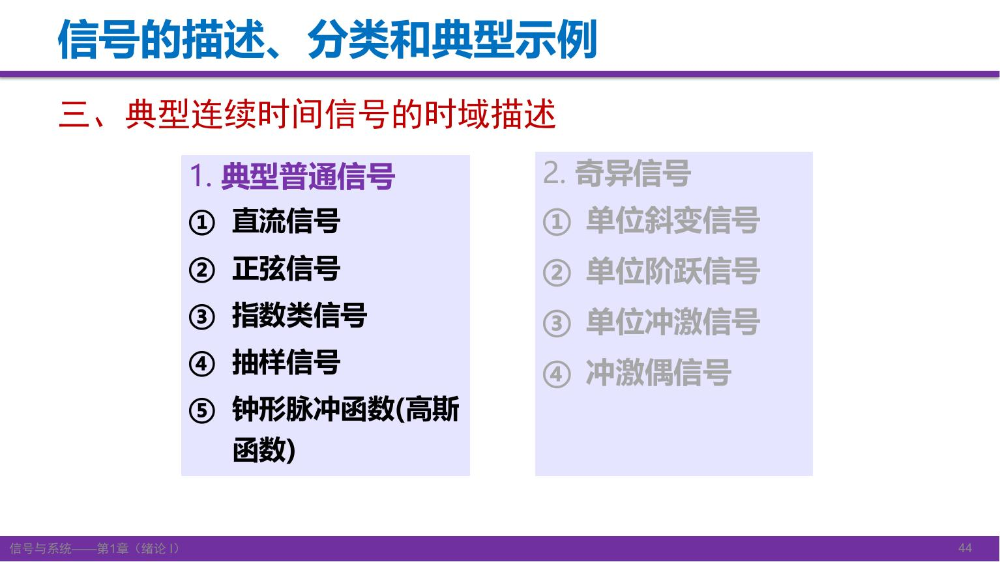
PDF 第 44 页这类分类是应该能够拿到分的基本问题。给出三个波形，首先判断连续还是离散，再判断是不是数字信号。
第一幅是连续时间信号；第二幅是离散时间信号；第三幅不仅时间离散，幅值也只取几个数，所以是数字信号。再问哪个是周期信号：第一幅可以按图判断为周期，第二幅和第三幅只凭现在画出的部分看不出来。
分类之后，还要介绍典型信号。复杂的东西可以由一些简单的东西来组织，因此先认识基本波形，后面才有分析和分解的基础。
回到讲义
T19 · 直流、正弦与实指数
原转写：01:04:07–01:06:06；课件：PDF p.44, 45, 46, 47。
展开对应课件页
PDF 第 44 页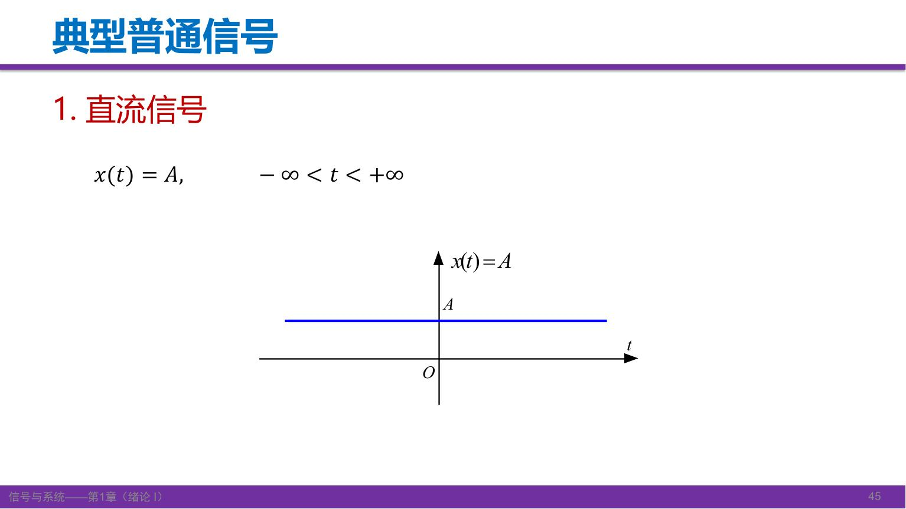
PDF 第 45 页PDF 第 46 页PDF 第 47 页今天先介绍直流、正弦、指数、抽样等常用信号，奇异信号留到下一堂。直流信号不随时间变化，就是常数。
正弦信号涉及振幅、角频率和初始相位，给定这些量就能画波形。为什么不单独讲余弦？这里说的正弦类包含正余弦，它们只是相位不同。
实指数可以写成 \(f(t)=Ke^{\alpha t}\)。α大于0时增长，小于0时衰减，等于0时变成直流。单边指数在t小于0时为0，正时间按指数衰减，其中τ叫时间常数，表示衰减快慢。这些都是以后常用的基本信号。
编者注： 原稿口述的字母及指数按PPT p.46–47规范书写，单边指数的τ取正。
回到讲义
T20 · 欧拉公式要双向熟练
原转写：01:06:06–01:08:00；课件：PDF p.48。
展开对应课件页
PDF 第 48 页虚指数信号需要重点掌握。大家数学课可能用i，这门课用j表示虚数单位，含义相同。\(e^{j\omega_0t}\)可以看作单位圆上随时间变化的向量，它与正余弦联系在一起。
欧拉公式一定要熟悉：\(e^{j\omega_0t}=\cos\omega_0t+j\sin\omega_0t\)。以后从头到尾都会用。
第一层是看到虚指数知道它由正余弦组成；第二层是看到正余弦，也能把它们写回虚指数。两种方向都要会。若已经忘记，就回到微积分或相应材料再看一遍，不能带着这个缺口一直往后学。
回到讲义
T21 · 复指数与变换工具
原转写：01:08:00–01:09:22；课件：PDF p.49。
展开对应课件页
PDF 第 49 页虚指数的重要性会在傅里叶变换中体现。更一般的复指数，指数里有实部和虚部，可以分成实指数部分与虚指数部分。
写成 \(Ke^{st}\)，其中 \(s=\sigma+j\omega_0\)。σ大于0时包络增长，小于0时衰减。这类复指数与后续拉普拉斯变换密切相关，所以这些形式不是只在绪论出现一次，后面会不断使用。下来可以自己画一画，看看参数变化会带来什么不同。
下面还有抽样信号，使用也非常多。课程后续会学习抽样定理、卷积定理等重要内容，这里先认识它的形状。
编者注： 原文连续识别为“负指数”“负数”“基本的和函数”，由PPT p.49的复数s与明确上下文订为“复指数”；末一术语不作无依据的逐字恢复。
回到讲义
T22 · Sa函数的形状和性质
原转写：01:09:22–01:10:43；课件：PDF p.50。
展开对应课件页
PDF 第 50 页抽样信号定义为Sa函数，\(\operatorname{Sa}(t)=\sin t/t\)。这个函数在微积分中已经见过：0处取1，是偶函数，有许多过零点，π及其他非零整数倍π处为0，向两边振幅逐渐衰减。
它还有一些常用积分性质，正半轴的积分是π/2。这门课会使用数学规律，但这里并不要求大家把复杂的收敛性、一致收敛等证明全部重做一遍，而是要理解并掌握所需性质。
编者注： 原稿称“周期振荡”和“Sa是三角波的简称”。前者若指整个函数周期性则不成立，按图与公式应为衰减振荡；后者无法由现有材料确认，保留原词为待核听疑点，不当作Sa的词源解释。Sa(0)=1由极限补定义。
回到讲义
T23 · sinc与高斯脉冲
原转写：01:10:43–01:11:46；课件：PDF p.50, 51, 52。
展开对应课件页
PDF 第 50 页PDF 第 51 页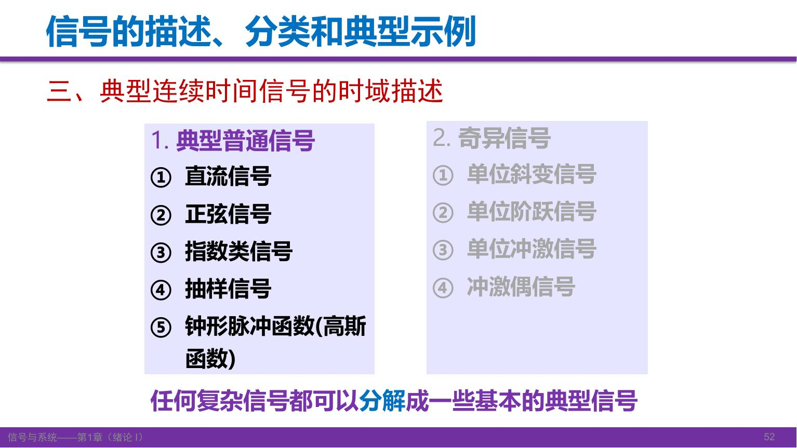
PDF 第 52 页有时还会见到sinc函数，注意定义中有没有π。它与Sa的形状相关，只是自变量归一化不同。这个波形要会画，后面一个简单矩形脉冲的傅里叶变换就与它联系起来，会经常使用。
还有高斯信号，也叫钟形脉冲。高斯函数在相关分析中很重要，本课程会涉及一些，但这里不作很多展开。
编者注： 原稿一处“sinc与sin有点像”，结合前后及PPT p.50整理为sinc与Sa的关系；具体采用 \(\operatorname{sinc}(t)=\operatorname{Sa}(\pi t)\)。
回到讲义
T24 · 分解思想与运算分类
原转写：01:11:46–01:13:47；课件：PDF p.52, 53。
展开对应课件页
PDF 第 52 页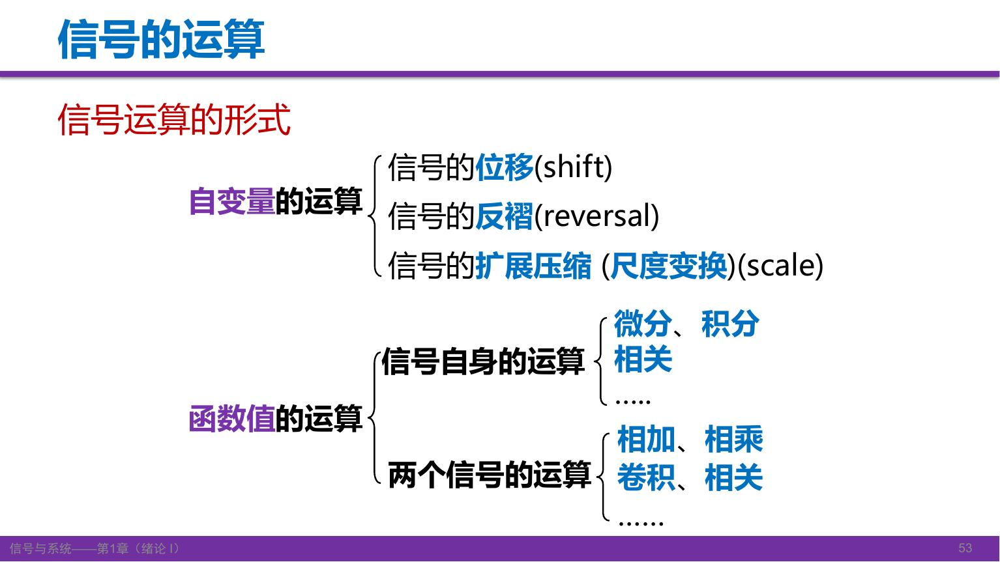
PDF 第 53 页为什么要学这些看起来简单的典型信号？因为复杂信号可以分解成简单信号的组合。这是课程很核心的思想：把复杂问题拆成能掌握的基本部分，再组织起来。
信号有两种常见表达，一种是解析式，一种是波形。信号的运算里，有些是对自变量的运算：位移、反褶、尺度变换；它们在图形上意味着波形位置或时间尺度改变。
另一方面，信号本身作为函数，也可以做加减乘除、微分积分，以及相关、卷积等运算。卷积以后很重要。绪论这里先讲三个基本的自变量运算：平移、反褶和尺度变化。
回到讲义
T25 · 平移的方向
原转写：01:13:47–01:14:52；课件：PDF p.54, 55。
展开对应课件页
PDF 第 54 页PDF 第 55 页平移是从 \(f(t)\) 变成 \(f(t-\tau)\)。τ大于0，表示信号延迟；τ小于0，表示超前。比如f(t−1)延迟一个单位，f(t+1)超前一个单位。
从波形上看，一个向右移、一个向左移。要把公式和图对应起来，不要只记一个方向词。
另一个运算是反褶，把时间变量取负，从f(t)变成f(−t)，也就是对时间轴上的左右位置作镜像。
编者注： 原转写有“往前/往后”和把结果写成f(t)=f(t−τ)的口头混用。本段按PPT p.54区分原信号与变换后信号：延迟向右，超前向左；不是声称二者恒等。
回到讲义
T26 · 反褶及实现含义
原转写：01:14:52–01:15:34；课件：PDF p.55。
展开对应课件页
PDF 第 55 页反褶就是相对于纵轴作镜像，原来的过去和未来位置互换。看图，左边的部分移到右边，右边的部分移到左边。
这个功能在物理实现上需要注意。一般说不能让一个实际器件把任意信号的时间直接倒过来；数字处理可以用后进先出等方式等效实现。
编者注： 为避免把教师概括理解成绝对禁令：对任意未知信号的全时间实时反演涉及未来信息，而已经录下的有限信号倒序播放是另一种有缓存的任务。此解释不改变原段对实现差异的提醒。
回到讲义
T27 · 尺度变换与读图
原转写：01:15:34–01:17:13；课件：PDF p.56, 57。
展开对应课件页
PDF 第 56 页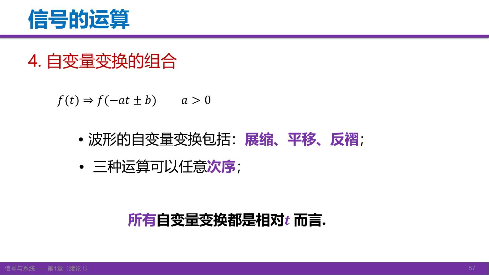
PDF 第 57 页尺度变换是从f(t)变成f(at)。a的绝对值大于1，时间轴上压缩；绝对值小于1，时间轴上扩展。
比如f(2t)，原来在1达到同样高度，现在在1/2就达到，波形变窄。换成f(t/2)，就要到2才达到同样位置，波形变宽。所以我们要学会画图，也要学会从图上判断发生了什么。
更一般的变换既有平移，也有反褶和尺度变化。给原图，应当会画变换后的图；反过来给变换后的图，也应当能够还原原图。习题会出现这两种要求。
回到讲义
T28 · 组合例题、自学与作业
原转写：01:17:13–录音末尾；课件：PDF p.57, 58, 59, 60, 61, 62, 63, 64。
展开对应课件页
PDF 第 57 页PDF 第 58 页PDF 第 59 页PDF 第 60 页PDF 第 61 页PDF 第 62 页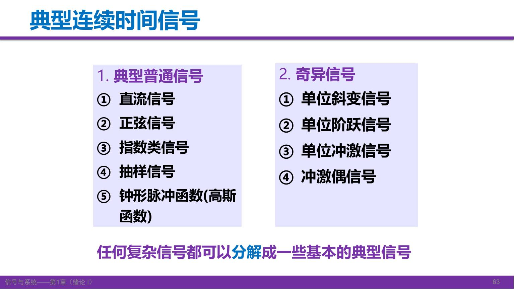
PDF 第 63 页PDF 第 64 页组合变换涉及平移、反褶和尺度。可以采用不同的操作次序，但一定记住，所有变换都相对于当前表达式的自变量t进行。这个地方很容易出错，不能光听，必须认真画几遍。
例如给f(t)的三角波，要求画f(−t−1)。可以先把f(t)变成f(t−1)，再把整个表达式的t换成−t，得到f(−t−1)。也可以先得到f(−t)，再作相应时移得到目标。关键是每一步都针对t，而不是看到括号里一个负号就凭直觉移动。
编者注： 原文后一条路线中出现“f(−t+1)”的混乱表达。按PPT p.58，第二步应为把g(t)=f(−t)左移1，得到g(t+1)=f[−(t+1)]。不同次序需要相应改变参数，并不意味着原参数不变也可任意交换。原音尚待核听。
其他例子和微分积分相对容易一些，大家自己学习。今天有几个与画图相关的作业，自己动手感受。再提醒一次，若选课太多、觉得很困难，要及早评估自己的时间安排。今天到这里，下课。
编者注： PPT p.64列作业1-3、1-4、1-5、1-10(a)(b)(c)、1-12单号，以及预习§1.4–§1.8；这里来自课件，不假称教师逐题念出。末段转写从1:18:00持续到录音末尾，结束秒数由播放器元数据另记，不能把最后一个转写起点当作结束时间。
回到讲义